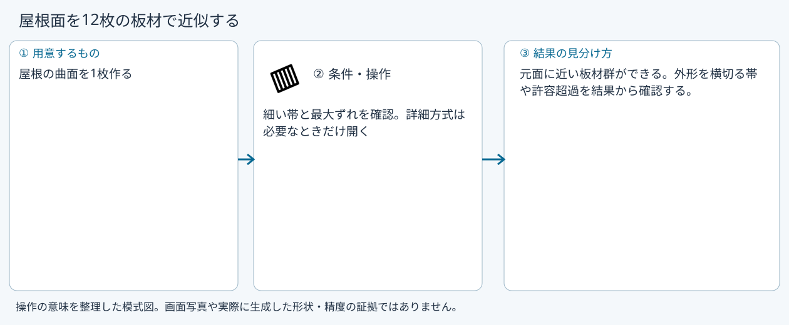
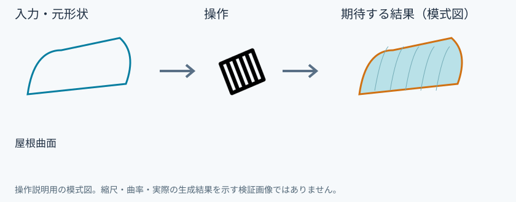
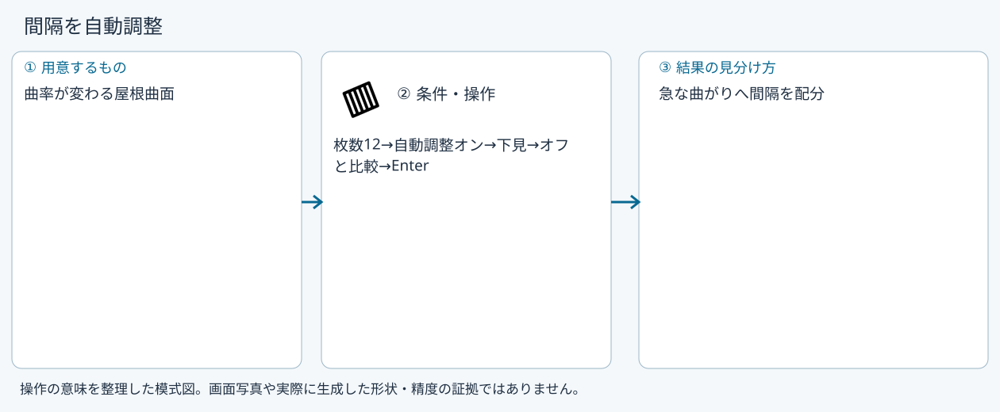
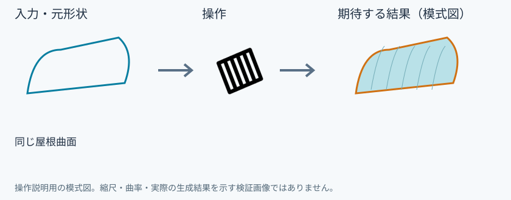

製作モデルを作る
製作モデルを作る
具体例: 屋根面を12枚の板材で近似する

準備
屋根の曲面を1枚作る
操作手順
- 製作の近似を選ぶ
- 対象面を追加する
- 枚数12、方向、許容ずれ0.1mmを指定する
- 間隔を自動調整を切り替え、幅と誤差を比較して確定する
設定: 細い帯と最大ずれを確認。詳細方式は必要なときだけ開く
結果を確認
元面に近い板材群ができる。外形を横切る帯や許容超過を結果から確認する。
取消・やり直し
ダイアログの取消、またはペインの取消を使います。即時操作には未確定段階がありません。 確定済みの文書変更はCtrl+Z、やり直しはCtrl+Yです。保存・書出し済みのファイルはUndoの対象ではありません。
進めない場合
部品か形状ガイドを1つ以上選んでください(何個でも 1 つの製作モデルにまとめます)。
対象欄と3Dの強調を照合し、必要な線・面・部品を各役割へ指定します。処理中は計算表示を確認し、取消が可能な処理は取消を使います。
枚数優先
準備: 屋根曲面

- 枚数12
- 方向を指定
- 下見の誤差・幅を確認
- Enter
確認: 指定枚数の近似
誤差優先
準備: 屋根曲面
- 枚数0
- 許容ずれ0.1mm
- 下見の枚数・幅を確認
- Enter
確認: 誤差を基準に枚数を決める
間隔を自動調整
準備: 曲率が変わる屋根曲面

- 枚数12
- 自動調整オン
- 下見
- オフと比較
- Enter
確認: 急な曲がりへ間隔を配分
方向を比較
準備: 同じ屋根曲面

- 縦割り
- 下見
- 横割り
- 下見
- 幅と最大ずれを比較
確認: 工作しやすい分割方向を選べる
Windows版の操作画面